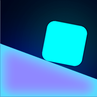
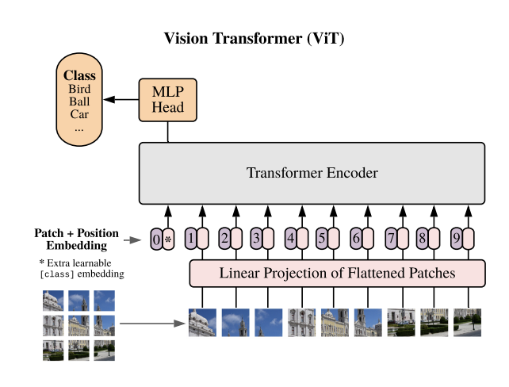

|
|
My WorkProjects
Papers

Developed a precision navigation system using RTK GPS with autonomous obstacle detection and avoidance capabilities. [webpage] 
Designed multi-sensor systems for humanitarian demining efforts with UnitedAI, combining aerial imagery and ground-based detection. [webpage] 
Implemented a vision-language model system enabling a robotic arm to execute tasks based on natural language instructions and visual input. [webpage] 
Created an autonomous navigation system for complex maze environments using LiDAR-based mapping and path planning, implemented in both simulation and real-world. [webpage] 
Built a responsive robot that interprets hand gestures in real-time using vision-based deep learning for human-robot interaction. [webpage] 
Competed in CERN's strategic AI programming hackathon, developing algorithms for resource management in simulated grid environments. [code] [certificate] 
Created an AI-powered learning platform that personalizes educational content based on individual reading patterns and comprehension levels. [code]

Designed and published a neon-themed puzzle-platformer game with procedurally generated levels, integrated analytics and monetization. [Play the game Online] [webpage] 

Implemented a Vision Transformer architecture from first principles to understand self-attention mechanisms for image data. Developed a conversational AI system for navigating university dining options, with voice recognition and menu recommendation capabilities. [code] 
Created a semantic search engine for scientific literature using transformer-based embeddings to find conceptually similar papers. [code] 
Built a scalable, containerized web application for recipe management with user authentication, favorites, and personalized recommendations. [code] Developed a symbolic mathematics solver that parses and solves complex diophantine equations with formal grammar and constraint satisfaction. [code] Created a desktop application that predicts auction car prices using machine learning, with interactive feature selection and result visualization. [code] Built an image classification bot that identifies snake species from user-submitted photos with real-time feedback. [code] Developed a conversational ordering system with natural language understanding for pizza customization and order processing. [code] 
Created a tool that compresses images using singular value decomposition, demonstrating the balance between compression ratio and quality. [code] RLBenchNet: The Right Network for the Right Reinforcement Learning Task
arXiv preprint arXiv:2505.15040, 2025
We systematically investigate the performance of several neural network architectures in reinforcement learning tasks, including LSTM, MLP, Mamba/Mamba-2, Transformer-XL, Gated Transformer-XL, and GRU. Through comprehensive evaluation across continuous control, discrete decision-making, and memory-based environments, we identify architecture-specific strengths and limitations. Our results reveal that MLPs excel in fully observable tasks, recurrent architectures offer robust performance in partially observable environments, and Mamba models achieve 4.5x higher throughput than LSTM while maintaining comparable performance.

Comparative Overview of HPC Frameworks for CPU/GPU Programming
FuT3ch Symposium, May 7-8, 2025
This poster presents a comprehensive analysis of High-Performance Computing (HPC) frameworks and their applications in CPU/GPU programming paradigms. The work explores various parallel computing frameworks, performance optimization techniques, and benchmarking results across different hardware architectures. Special focus is given to emerging technologies in quantum computing integration and their potential impact on traditional HPC workflows, providing insights for researchers and practitioners in the field of computational science.
|
![[certificate]](https://tornadosky.github.io/doc/cern.jpg){kind=link}